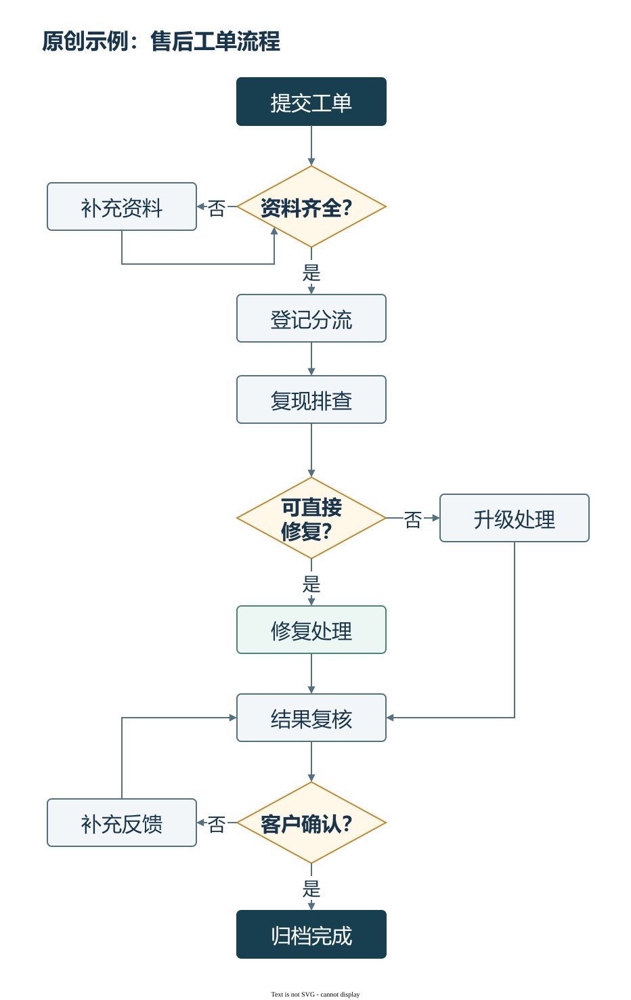

Editable diagram example · 原创可编辑示例
Need to change a diagram
in a screenshot?
截图里的流程图，重画后能改字、改连线
Explore an original flowchart with editable text, shapes and connectors. View the full-size vector diagram or open the source in draw.io.

原创虚构售后流程，展示分支和短回路的排布
Text and connectors you can change
示例交付draw.io原生图和SVG，可修改节点文字与连接线

Open the .drawio file in diagrams.net or draw.io. The SVG can be viewed in a browser. This example does not include a PPTX file.
A diagram with decisions and feedback
判断分支、处理路径和短回路，放在一张图里
- Rounded process nodes and diamond decision nodes
- Labelled branches, consistent connectors and clear spacing
- Original fictional content with Chinese labels
节点文字、位置和连线均可在源文件中继续修改；SVG适合查看和放大
Open and edit
Download the .drawio file, then open it in diagrams.net or draw.io. Click a node to edit its text, drag it to change the layout, or adjust its connector endpoints.
下载.drawio文件 → 用draw.io打开
双击改字，拖动节点，调整连线
This page demonstrates an editable drawing. It does not collect files or process orders.